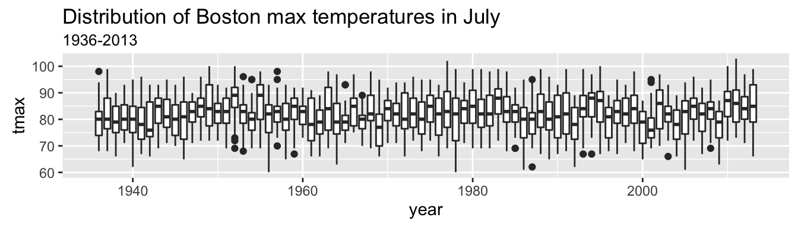

# read in data, parse date from string to date, add year column, convert max temp to fahrenheit
data <- read.csv('data/output/data.csv', stringsAsFactors = F) %>%
mutate(date_ = ymd_hms(date_)) %>%
mutate(year = year(date_)) %>%
mutate(month = month(date_)) %>%
mutate(tmax = celsius.to.fahrenheit(tmax))data %>%
group_by(year) %>%
summarise(count = n()) %>%
ggplot(aes(count)) +
geom_histogram(binwidth=1)data %>%
group_by(year) %>%
summarise(count = n()) %>%
filter(count < 365)## # A tibble: 3 x 2
## year count
## <dbl> <int>
## 1 2014 245
## 2 2015 214
## 3 2016 183How interesting - the 3 most recent years are missing data. Maybe Enigma hasn’t updated their data? Either way we will only focus on complete years.
complete <- data %>%
filter(year < 2014)
complete %>%
ggplot(aes(tmax)) +
geom_histogram(binwidth=1) +
labs(
title='Distribution of Boston max temperatures',
subtitle='1936-2013'
)Nice bell shape - looks mostly normal, slightly right-skewed.
complete %>%
group_by(year) %>%
summarise(median = median(tmax)) %>%
ggplot(aes(year, median)) +
geom_line() +
labs(
title='Yearly median of Boston max temperatures',
subtitle='1936-2013'
)This is all over the place. Doesn’t say much.
complete %>%
ggplot(aes(x=year, y=tmax, group=year)) +
geom_boxplot() +
labs(
title='Distribution of Boston max temperatures',
subtitle='1936-2013'
)Also doesn’t say much.
complete %>%
ggplot(aes(x=tmax, group=year)) +
geom_density()Also doesn’t say much. But looks pretty cool!
complete %>%
filter(month == 7) %>%
ggplot(aes(x=year, y=tmax, group=year)) +
geom_boxplot() +
labs(
title='Distribution of Boston max temperatures in July',
subtitle='1936-2013'
)